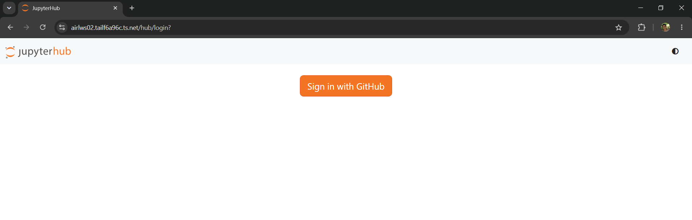
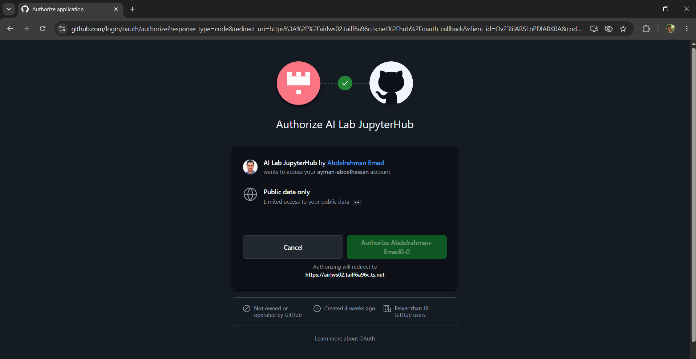
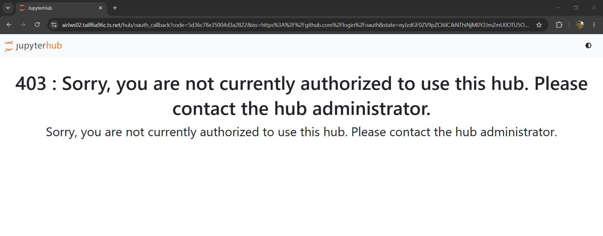

Choose a request type
Submit a research application or a graduation project application using the lab form. The form may require Google sign-in.
Open access formStep-by-step guidance for requesting an account, connecting to the cluster, preparing your environment, and getting help.
Access is granted after the application is reviewed by lab administration and your faculty supervisor or PI confirms the project.
Submit a research application or a graduation project application using the lab form. The form may require Google sign-in.
Open access formResearchers: full name, faculty email, department, supervisor, experiment and dataset details, and estimated size. Project teams also provide member names, project impact, and data contribution.
Your faculty supervisor or PI must send a short confirmation to AIRL2026@hotmail.com, verifying your work.
Account creation is manual and may take about 2–3 weeks. Approved users receive their SSH username, temporary password, storage quota, and training material by email.
Never share passwords, SSH keys, or accounts. Contact AIRL through the team email if you suspect your credentials have been compromised.
Use the credentials and access method provided for your account. Cluster resources are shared; run computational workloads through Slurm.
Open the AIRL JupyterHub portal and sign in with the GitHub account associated with your faculty email.

Portal login screen ↗
Authentication screen ↗
Unapproved account screen ↗Open a terminal and replace [username] with your AIRL account username:
ssh [username]@airlws02.tailf6a96c.ts.netOn first connection, verify the host fingerprint. Enter the temporary password supplied by the lab when prompted, then follow the instructions to set up SSH-key access.
For macOS/Linux, or Git Bash/WSL on Windows, you can install your public key with:
ssh-copy-id [username]@airlws02.tailf6a96c.ts.netKeep the private key on your own device and protect it with a passphrase.
The login node is for login, editing files, downloading data, and submitting jobs. Run compute workloads on allocated compute resources through Slurm—not directly on compute nodes without administrator authorization.
Remote SSH can make development convenient. To reduce load on login nodes, use a compute node for work beyond simple editing.
Set Connect Timeout to 60 seconds. Set Max Reconnection Attempts to 0 (or at most 1) to avoid repeated authentication attempts and possible account lockout. Enable Show Login Terminal when troubleshooting.
Add a login host and a compute host in your SSH config. Replace USERNAME with your own username and use the node name assigned to your interactive job.
Host airl-login
HostName airlws02.tailf6a96c.ts.net
User USERNAME
Host airl-compute
User USERNAME
HostName nodename
ProxyJump airl-loginLog in to the cluster, start an interactive Slurm job with resources appropriate to your work, then note the allocated compute-node hostname.
Update the compute host's HostName to the allocated node and connect to that host in VS Code. Avoid running a full VS Code session on a login node.
Keep files in the right place and validate your workflow with a small test before scaling up.
The documentation also describes a shared Pool area as a staging location; Pool is not backed up. Confirm the available paths and quotas with AIRL.
Large datasets over 100 GB need lab-administrator approval before upload. Avoid duplicate copies of public datasets where possible.
/workspace where available.sbatch /workspace/train.sh.Ask AIRL if you need help choosing the correct Slurm options. Do not guess resource parameters for a production job.
The systems are designated for low-security data only. Do not store personal or financial data, unanonymized data, data under NDAs, national-security-restricted data, or data requiring security controls or audit tracking.
Email AIRL2026@hotmail.com. The team mailing list helps route your question to the right person. Please don't email individual staff directly for support.
HPC Help and Office Hours are also held several times each week for drop-in questions and troubleshooting.
“The authors acknowledge the Cairo University's Artificial Intelligence Research Lab for providing (High-Performance Computing, storage, consultation) resources that have contributed to the research results reported within this (paper, thesis, report).”
Read the full governance regulations ↗